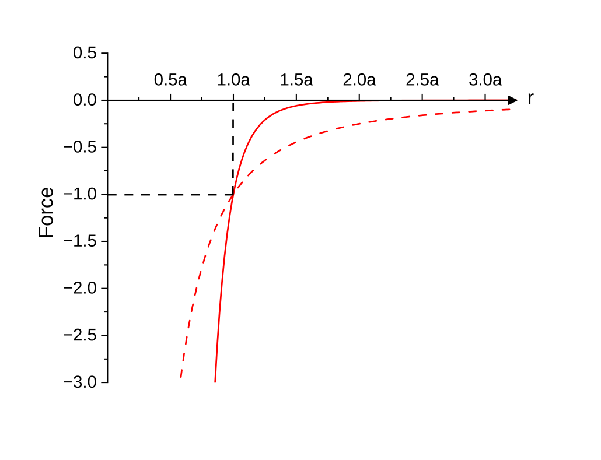
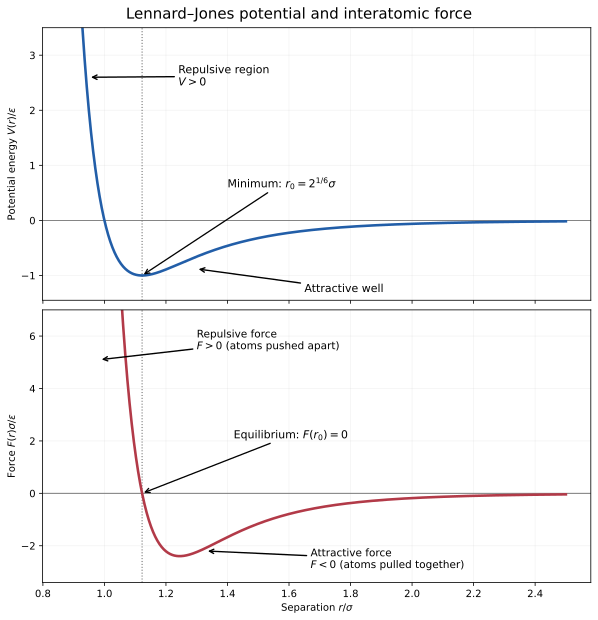
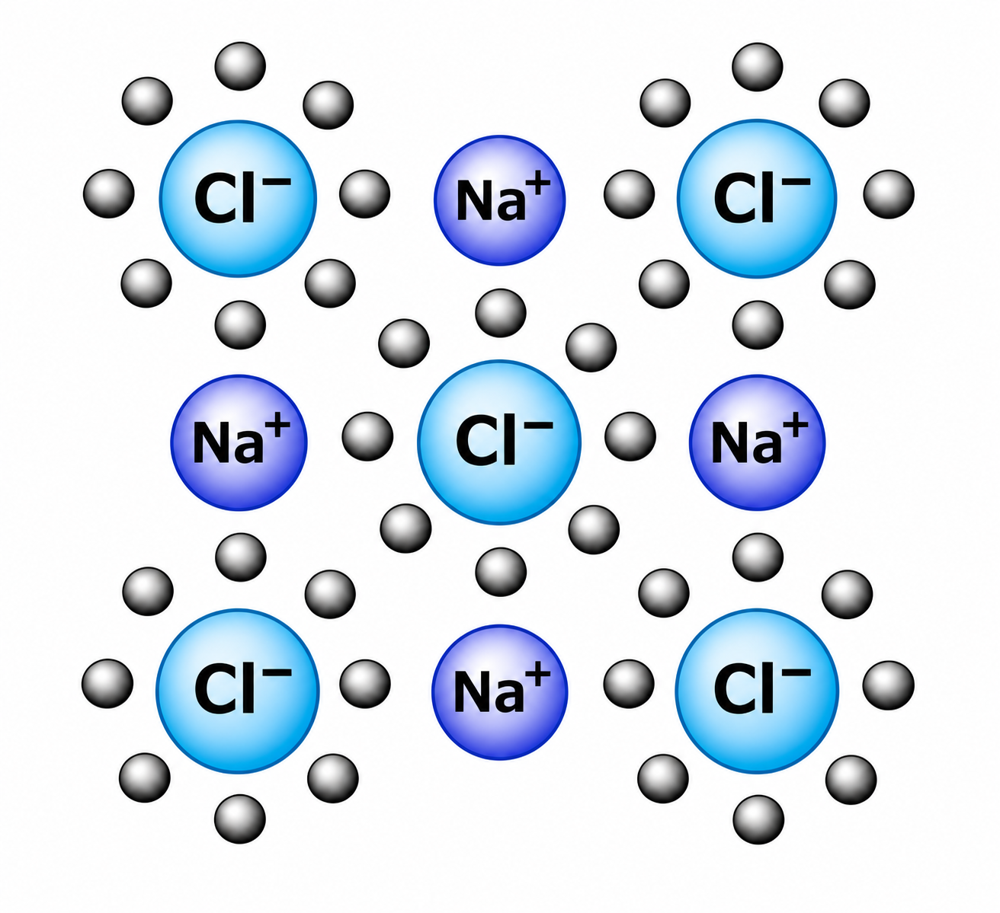
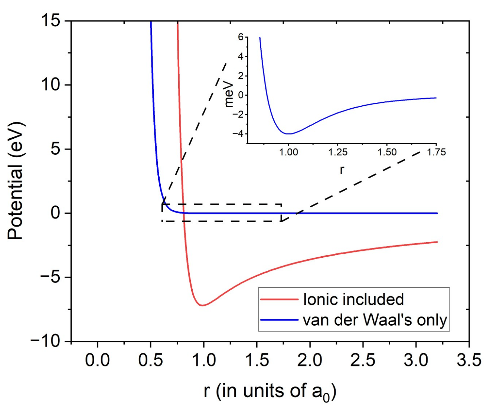
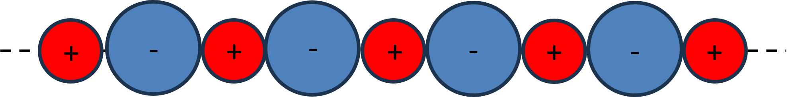
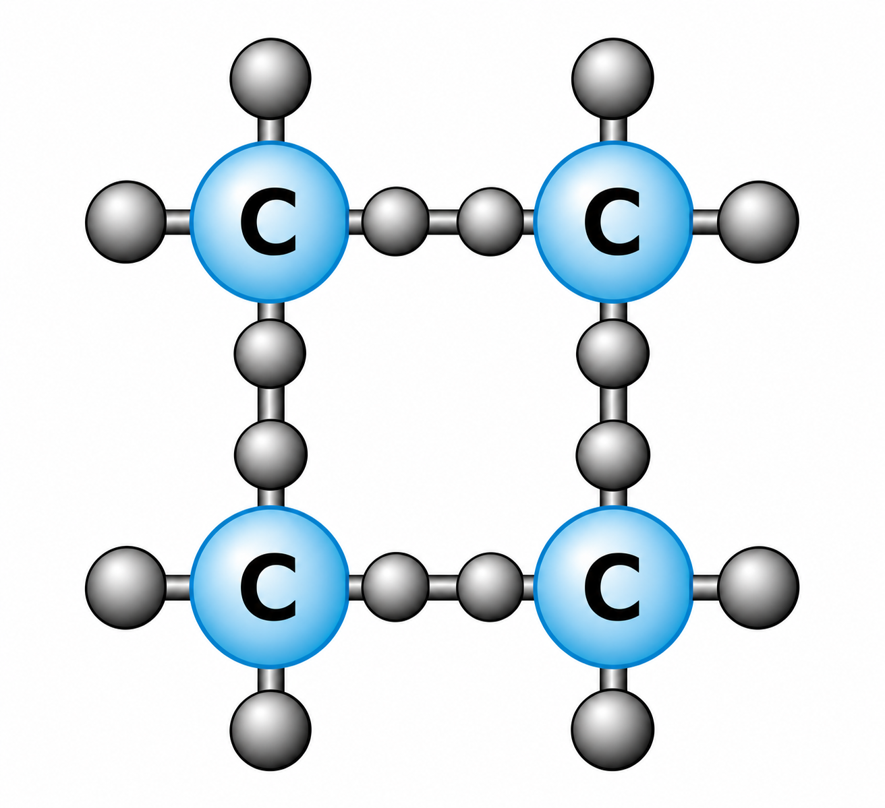
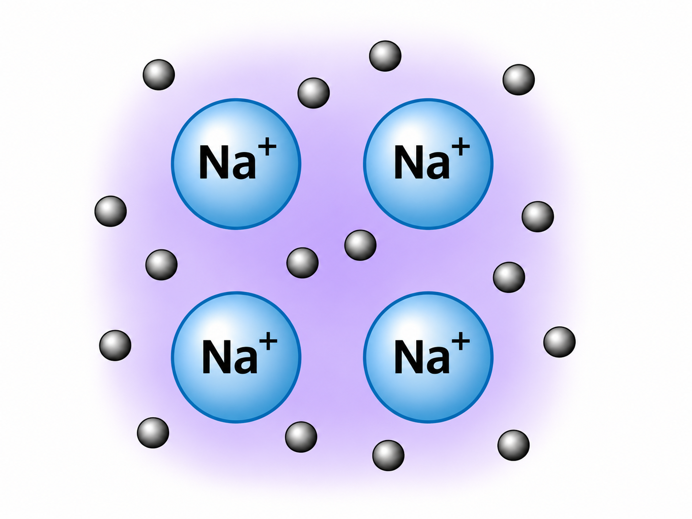
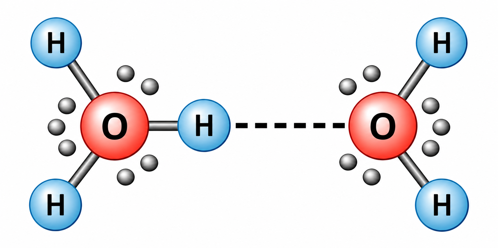

2 Atomic and Molecular Bonding
2.1 Learning outcomes
After studying this chapter, you should be able to:
- distinguish solids, liquids and gases using compressibility, rigidity, viscosity and the observation timescale;
- explain why electromagnetic interactions dominate ordinary interatomic bonding;
- relate interatomic force to potential energy, and obtain equilibrium separation and a small-displacement spring constant;
- differentiate and interpret the Lennard–Jones potential;
- relate a molar latent heat approximately to the energy of an individual intermolecular bond;
- describe dispersion, ionic, covalent and metallic bonding, including their different physical origins;
- explain the Madelung constant and construct a simple ionic-crystal energy model.
This chapter follows the main sequence of Lectures 2 and 3, with the bonding recap and Madelung material from Lecture 4. Lecture 4’s transition to temperature and the ideal gas law belongs in Chapter 3.
2.2 States of matter: a useful description, not an absolute classification
A gas is readily compressed and offers little resistance to shear. A solid usually resists changes of shape, while a liquid flows but is comparatively difficult to compress. Real materials are less tidy: glasses, gels, glues and polymers can respond as solids over short times and flow over sufficiently long times. Therefore a description of a state of matter should also specify the timescale of the observation.
| Property | Typical solid | Typical liquid | Typical gas |
|---|---|---|---|
| Compressibility | Low | Low | High |
| Ability to sustain shear | Usually high | Not at equilibrium | Not at equilibrium |
| Flow | Usually slow | Yes | Yes |
| Microscopic picture | Neighbours remain near preferred positions | Neighbours change over time | Molecules move between collisions |
Figure 2.1 gives a visual representation of the different phases. Plasma and quantum condensates are included for context, but the mechanical comparisons below concentrate on solids, liquids and gases.

The microscopic distinction leads to the central question of this chapter: what holds neighbouring atoms or molecules together, and what prevents them collapsing into one another?
2.3 Attractive and repulsive interactions
The sketches in Figure 2.2 and Figure 2.3 illustrate the interaction between two atoms and the competing directions of the force.


The Origin plot in Figure 2.4 illustrates how different attractive contributions vary with separation. Compare their distance dependence before examining the net force between atoms.

For two atoms separated by a distance \(r\), let \(V(r)\) denote their interaction potential energy. The radial force is
\[ F_r(r)=-\frac{\mathrm{d}V}{\mathrm{d}r}. \]
A negative force is attractive (towards decreasing \(r\)), whereas a positive force is repulsive. At an equilibrium separation \(r_0\),
\[ \left.\frac{\mathrm{d}V}{\mathrm{d}r}\right|_{r_0}=0. \]
A stable equilibrium additionally requires \(V''(r_0)>0\). In an ordinary interatomic potential, the energy increases sharply if atoms approach too closely, falls to a negative minimum at a preferred spacing, and approaches zero as they are separated very far apart.
2.3.1 Why electromagnetic forces dominate
Gravity is extremely weak between atoms. The strong and weak nuclear interactions act over nuclear or subnuclear distances, not the typical spacing between separate atoms. Electrostatic interactions between nuclei and electrons, together with quantum-mechanical restrictions on electronic states, therefore control ordinary chemical bonding. The very steep short-range repulsion is often described in terms of overlap of electron clouds and the Pauli exclusion principle; it should not be confused with the strong nuclear force.
2.3.2 Small oscillations and Hooke’s law
Write a small displacement from equilibrium as \(x=r-r_0\). Taylor expansion gives
\[ V(r_0+x)=V(r_0)+V'(r_0)x+\frac12V''(r_0)x^2+\cdots. \]
Since \(V'(r_0)=0\), to second order
\[ V(r_0+x)\simeq V(r_0)+\frac12 k_{\mathrm{eff}}x^2, \qquad k_{\mathrm{eff}}=V''(r_0). \]
Differentiating yields \(F\simeq-k_{\mathrm{eff}}x\): Hooke’s law emerges as the local approximation to a more general atomic potential. For two free atoms, their relative vibration has angular frequency \(\omega=\sqrt{k_{\mathrm{eff}}/\mu}\), where \(\mu=m_1m_2/(m_1+m_2)\) is the reduced mass. The harmonic approximation breaks down for sufficiently large displacements because real potentials are asymmetric.
The force and energy sketches in Figure 2.5 introduce the equilibrium separation before we work through the mathematical model.

2.4 The Lennard–Jones potential
A useful model for interactions between neutral atoms, particularly noble gases, is
\[ V(r)=4\varepsilon\left[\left(\frac{\sigma}{r}\right)^{12}-\left(\frac{\sigma}{r}\right)^6\right]. \tag{2.1} \]
Here \(\varepsilon>0\) is the well depth and \(\sigma\) is the separation at which the potential crosses zero. Some of your problem sheets call this zero-crossing distance \(a\), rather than \(\sigma\); both conventions describe the same parameter in this equation.
The \(r^{-6}\) term represents an attractive dispersion interaction, while the \(r^{-12}\) term is a convenient empirical representation of short-range repulsion. Neither exponent should be mistaken for a universal exact law of atomic repulsion.
2.4.1 Deriving the equilibrium separation
Differentiate Equation (2.1):
\[ \frac{\mathrm{d}V}{\mathrm{d}r}=4\varepsilon\left[-\frac{12\sigma^{12}}{r^{13}}+\frac{6\sigma^6}{r^7}\right]. \]
At the minimum, set the derivative to zero:
\[ \frac{12\sigma^{12}}{r_0^{13}}=\frac{6\sigma^6}{r_0^7} \quad\Longrightarrow\quad r_0^6=2\sigma^6. \]
Therefore,
\[ \boxed{r_0=2^{1/6}\sigma\simeq1.122\sigma.} \]
Substituting \(r_0\) back into the potential gives
\[ V(r_0)=4\varepsilon\left[\frac14-\frac12\right]=\boxed{-\varepsilon}. \]
The energy required to separate an isolated pair from the bottom of the well to infinite distance is thus \(\varepsilon\).
2.4.2 Force and stiffness
Differentiation also gives the radial force:
\[ F_r(r)=\frac{24\varepsilon}{r}\left[2\left(\frac{\sigma}{r}\right)^{12}-\left(\frac{\sigma}{r}\right)^6\right]. \]
For \(r<r_0\) this is positive (repulsive), and for \(r>r_0\) it is negative (attractive). A second derivative evaluated at the minimum yields
\[ \boxed{k_{\mathrm{eff}}=V''(r_0)=\frac{72\varepsilon}{r_0^2}.} \]
This last result connects the depth and width of an atomic potential to the stiffness of small vibrations.
The potential-energy and force curves are shown together in Figure 2.6. The potential minimum corresponds to zero force; on either side, the slope of the potential determines the direction of the force. Note that the plotted axes and normalisation follow the original Origin export.

2.4.3 From the general force law to a potential well
The Lecture 2 handwritten working starts from a general repulsive-minus-attractive force law. To keep the dimensions transparent, write it as
\[ F(r)=C\left[\left(\frac{a_0}{r}\right)^m-\left(\frac{a_0}{r}\right)^n\right],\qquad m>n>1, \]
where \(C\) has units of force and \(a_0\) is the equilibrium separation. The force is zero at \(r=a_0\). Since \(F=-\mathrm dV/\mathrm dr\) and \(V(\infty)=0\),
\[ V(r)=Ca_0\left[\frac{(a_0/r)^{m-1}}{m-1}-\frac{(a_0/r)^{n-1}}{n-1}\right]. \]
For \(m=13\) and \(n=7\) this has the Lennard–Jones powers \(r^{-12}\) and \(r^{-6}\). Importantly, \(a_0\) here is not the LJ zero-crossing parameter \(\sigma\): \(a_0=2^{1/6}\sigma\).
Differentiating the force and evaluating at equilibrium gives
\[ \left.\frac{\mathrm dF}{\mathrm dr}\right|_{a_0}=-\frac{C(m-n)}{a_0},\qquad F(a_0+x)\simeq-\underbrace{\frac{C(m-n)}{a_0}}_{k_{\mathrm{eff}}}x. \]
This makes the spring constant in Hooke’s law explicit and corrects the prefactor normalisation that can otherwise be obscured when switching between the different \(A\), \(a_0\) and \(\varepsilon\) conventions in the handwritten working.

2.5 Dispersion forces, molecular adhesion and noble gases
Even electrically neutral atoms can attract one another. Fluctuations in their electronic charge distributions induce correlated dipoles, producing London dispersion forces. Permanent dipoles and hydrogen bonding can also contribute to molecular cohesion, but these are distinct mechanisms and should not all be identified with the Lennard–Jones model.
Dispersion forces help explain why noble gases condense at sufficiently low temperatures and why many small contacts can generate substantial adhesion. Your lecture uses the example of gecko-inspired adhesive surfaces, whose many fine contacts exploit weak surface interactions collectively. The important lesson is that weak interactions can become significant when repeated over a very large contact area.
2.6 Binding energies and latent heat
A substance can absorb energy during a phase transition without an accompanying rise in temperature. The energy per mole required for a phase change is its molar latent heat (more precisely, an enthalpy change at constant pressure). Evaporation separates molecules that were interacting with neighbours in the liquid.
Suppose each molecule has approximately \(z\) neighbours and each neighbour pair contributes an energy \(-\varepsilon\). Counting every bond once rather than twice gives an approximate cohesive energy per molecule of \(z\varepsilon/2\). For one mole,
\[ L_{\mathrm{vap}}\approx\frac{zN_A\varepsilon}{2}, \qquad\boxed{\varepsilon\approx\frac{2L_{\mathrm{vap}}}{zN_A}}. \tag{2.2} \]
This is the nearest-neighbour estimate used in your problem class, not an exact equality: liquid and vapour structures, non-nearest-neighbour interactions, thermal energy and \(pV\) effects can alter the result.
Your 14 November problem class gives \(L_{\mathrm{vap}}=9.08\ \mathrm{kJ\,mol^{-1}}\) for krypton. Take an illustrative coordination number \(z=10\).
\[ \varepsilon\approx\frac{2(9.08\times10^3)}{10(6.02214076\times10^{23})} =3.02\times10^{-21}\ \mathrm{J}. \]
Converting to electronvolts:
\[ \varepsilon\approx\frac{3.02\times10^{-21}}{1.602176634\times10^{-19}} =\boxed{0.0189\ \mathrm{eV}}. \]
The result is an order-of-magnitude intermolecular energy, not the energy of a covalent bond within a molecule. The problem-class solution compares it with \(\tfrac32k_BT\) at room temperature; this is a useful qualitative comparison, but condensation cannot be predicted by a simple one-particle energy threshold alone.
2.6.1 Bond dissociation versus phase change
Evaporating liquid nitrogen largely separates molecules from one another; dissociating \(\mathrm{N_2}\) breaks the much stronger bond within each molecule. Your problem class gives a nitrogen dissociation energy of \(946\ \mathrm{kJ\,mol^{-1}}\). The corresponding energy per molecule is
\[ E_{\mathrm{diss}}=\frac{946\times10^3}{N_A}\simeq1.57\times10^{-18}\ \mathrm{J}\simeq9.82\ \mathrm{eV}. \]
A photon carrying this energy has wavelength
\[ \lambda=\frac{hc}{E_{\mathrm{diss}}}\simeq\boxed{126\ \mathrm{nm}}, \]
in the ultraviolet. This photon calculation is an idealised threshold estimate: actual photodissociation also depends on molecular absorption and allowed electronic transitions. Equating \(\tfrac32k_BT\) to the dissociation energy gives a characteristic temperature scale, not a temperature at which every molecule dissociates.
2.7 Ionic bonding and the Madelung constant

In an ionic solid, electron transfer produces oppositely charged ions, whose long-range Coulomb attractions compete with short-range repulsion. Sodium chloride is the introductory example in your lectures.
For charges \(q_1\) and \(q_2\) separated by \(r\) in vacuum,
\[ V_C(r)=\frac{q_1q_2}{4\pi\varepsilon_0r}. \]
A single positive–negative pair has negative potential energy. But an ion in a crystal interacts with many ions of both signs. The Coulomb sum can be written, for a crystal with charges of magnitude \(e\) and nearest-neighbour separation \(r\),
\[ U_{\mathrm{Coul}}(r)=-\frac{\alpha e^2}{4\pi\varepsilon_0r} \]
per ion pair, where \(\alpha\) is the dimensionless Madelung constant. Its value depends on crystal geometry, not on temperature or the arbitrary size of the chosen unit cell. For the NaCl structure, \(\alpha\simeq1.748\).


2.7.1 A simple lattice-energy model
To obtain a stable separation, include a short-range repulsive term, represented here by \(B/r^n\):
\[ U(r)=-\frac{A}{r}+\frac{B}{r^n},\qquad A=\frac{\alpha e^2}{4\pi\varepsilon_0}. \]
At equilibrium \(r_0\),
\[ \left.\frac{\mathrm{d}U}{\mathrm{d}r}\right|_{r_0} =\frac{A}{r_0^2}-\frac{nB}{r_0^{n+1}}=0, \]
so \(B=Ar_0^{n-1}/n\). Substitution gives
\[ \boxed{U(r_0)=-\frac{\alpha e^2}{4\pi\varepsilon_0r_0}\left(1-\frac1n\right).} \]
This is the elementary Born–Landé-type result. The exponent \(n\) represents the short-range repulsion phenomenologically; it is not the same as the number of nearest neighbours \(z\) used in the latent-heat estimate.
The slides explicitly name the Madelung constant and ionic-solid potential. This presentation supplies a self-contained derivation of the standard simplified model. The detailed numerical lattice sum and the handwritten working should be checked together before this section is treated as a final transcription of your board derivation.
2.8 Covalent bonding

In a covalent bond, electrons are shared between atoms rather than fully transferred from one atom to another. Quantum-mechanical electronic states can concentrate charge between neighbouring nuclei, lowering the total energy. The Pauli exclusion principle constrains which electrons can occupy a given state. Bond directionality is often important: a molecule or network solid may have strongly preferred geometries.
A useful contrast is between the strong covalent bond inside a nitrogen molecule and the much weaker intermolecular attractions between nitrogen molecules. This distinction explains why a liquid can boil without its constituent molecules being chemically destroyed.
2.9 Metallic bonding

In a metal, valence electrons occupy states that extend through the material rather than remaining associated with one particular atom–atom pair. The positive ion cores and the delocalised electrons form a collectively bound solid. This model helps explain why many metals conduct electricity and heat and can deform without the highly directional bond-breaking associated with some covalent networks.
The ionic, covalent and metallic categories are useful limits, not a perfect classification: real materials may exhibit mixed bonding character.
2.9.1 Hydrogen bonding
A hydrogen bond is a particularly important directional intermolecular interaction involving a hydrogen atom covalently bonded to an electronegative atom (often O, N or F) and an electron-rich site on a neighbouring molecule. In water, a hydrogen bond is conventionally represented as \(\mathrm{O-H\cdots O}\), where the solid line is the intramolecular covalent bond and the dots represent the intermolecular hydrogen bond.

2.10 Comparing bonding mechanisms
| Bonding description | Main microscopic idea | Typical example | Useful caution |
|---|---|---|---|
| Dispersion / van der Waals | Correlated electronic fluctuations and other weak intermolecular interactions | Condensed noble gases | Weak per pair; important collectively |
| Ionic | Electrostatic attraction in a lattice of charged ions | NaCl | Include interactions beyond nearest neighbours |
| Covalent | Shared electronic states between atoms | \(\mathrm{N_2}\), diamond | Often directional |
| Metallic | Delocalised valence electrons in a solid | Copper, aluminium | Conductivity is not a definition of bond strength |
2.11 Practice questions
These are new practice questions, not reproductions of the uploaded problem-class questions.
- For \(V(r)=4\varepsilon[(\sigma/r)^{12}-(\sigma/r)^6]\), find the separation at which \(V=0\) and explain why this is not the equilibrium separation.
- A hypothetical neutral-atom pair has \(\varepsilon=2.5\times10^{-21}\ \mathrm{J}\) and \(r_0=0.40\ \mathrm{nm}\). Estimate the harmonic spring constant \(k_{\mathrm{eff}}\).
- A simple liquid has molar vaporisation enthalpy \(12.0\ \mathrm{kJ\,mol^{-1}}\). Assuming \(z=8\), estimate the intermolecular pair energy in electronvolts. State two limitations.
- Explain why a liquid of diatomic molecules can evaporate without breaking the covalent bonds within those molecules.
- Starting from \(U(r)=-A/r+B/r^n\), derive the energy at the equilibrium separation.
- \(V=0\) at \(r=\sigma\); the equilibrium separation is \(2^{1/6}\sigma\), where the derivative vanishes and \(V=-\varepsilon\).
- \(k_{\mathrm{eff}}=72\varepsilon/r_0^2=72(2.5\times10^{-21})/(0.40\times10^{-9})^2\approx1.13\ \mathrm{N\,m^{-1}}\).
- \(\varepsilon\approx2(12000)/(8N_A)=4.98\times10^{-21}\ \mathrm{J}\approx0.0311\ \mathrm{eV}\). Limitations include coordination-number uncertainty, contributions from more distant neighbours and the difference between enthalpy and cohesive energy.
- Evaporation overcomes predominantly intermolecular attractions; molecular dissociation requires breaking the stronger intramolecular covalent bond.
- Set \(U'(r_0)=A/r_0^2-nB/r_0^{n+1}=0\), giving \(B=Ar_0^{n-1}/n\). Hence \(U(r_0)=-A(1-1/n)/r_0\).
2.12 Summary
Interatomic bonding is a balance between attraction and short-range repulsion. A potential-energy minimum defines a preferred separation, while its curvature sets the stiffness of small vibrations. The Lennard–Jones model illustrates this for neutral atoms; latent heats provide an approximate route from macroscopic measurements to microscopic cohesion. Ionic, covalent and metallic bonds arise from different ways in which electronic charge and quantum states lower the energy of matter.
In Chapter 3 we consider how thermal energy competes with these binding interactions and how a gas can be described through temperature, pressure and the ideal gas law.
2.13 Appendix: electrostatic versus gravitational interaction
Lecture 2 compares the strengths of different fundamental forces at atomic scales. For two particles with charges \(q_1,q_2\) and masses \(m_1,m_2\), separated by \(r\),
\[ \left|F_{\mathrm{electric}}\right|=\frac{|q_1q_2|}{4\pi\varepsilon_0r^2},\qquad |F_{\mathrm{gravity}}|=\frac{Gm_1m_2}{r^2}. \]
The ratio is independent of \(r\) when the particles are treated as point objects. For a proton and electron, electric attraction is about \(10^{39}\) times stronger than gravity. This is why electromagnetic interactions dominate chemical bonding, even though gravity controls astronomical structures. This comparison is an additional worked explanation of the lecture’s force-range discussion.
2.14 Notes on scope and accuracy
The extra dipole-force appendix in Lecture 2 is marked not examined and has therefore not been presented as a required derivation. The Madelung calculation is likewise treated as an extension until the exact assessment depth is confirmed. The figures are schematic illustrations; they should be interpreted alongside the equations rather than as exact microscopic representations.